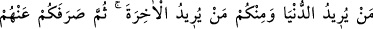
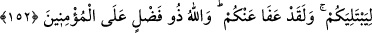

Kesinlikle, bendekine karşı bir arzu duyma!
Çünkü görür Arş’ın üstünden Cenâb-ı Mevlâ
Ve gadab eder büyük günah işleyene.
Kadın: “Bırak şiiri!” dedi. “Kur’ân’dan bir âyet okuyabilir misin?” Genç: “Evet”
deyince, kadın: “Haydi oku” dedi. Genç: “Zinâ eden kadın ve erkekten her birine yüz
sopa vurun.” (en-Nûr, 24/2) meâlindeki âyet-i celîleyi okudu. Kadın: “Tamam, tamam!”
dedi ve geriye elleri boş olarak döndü.
Bakın şu delikanlının durumuna; şehvetine karşı koymasına! Nasıl da mâsiyete
düşmemek için direndi? Allah sabredenleri sever?
Şehvetine hâkim olmak, becerikli gence yakışır.
Çünkü ihtiyarlıkta insanın şehveti yatışır.
Bu sebepledir ki bir şeyh şöyle diyor: “Kim ki gençliğinde mücâhede sahibi değil ise
bu yoldan hiçbir nasibi olamaz.” Çünkü kırkından sonra zâhid olmak, fazla bir yarar
sağlamayacaktır. Ama bu haber sizi aldatmasın, tembelliğe düşürmesin. Çünkü, hiçbir
ferd emir ve nehyin kendisinden sâkıt olacağı seviyeye gelemez.
Maksat, ölüm gelinceye kadar ibâdet etmektir. Dolayısıyla, gençler de yaşlılar da
mükellef olma açısından eşittirler. Muhtemeldir ki, gençliğinde yapamadığı şeyleri yaşlı
iken yapar.
Hâfız şöyle diyor:
Gençlik geçti ömründe toplamadan bir gül,
Ar belâsına da olsa bu ihtiyarlıkta hüner et, gel.
152. Siz Allah’ın izni ile düşmanlarınızı öldürürken, Allah size olan vâdini yerine
getirmiştir. Nihâyet, öyle bir an geldi ki, Allah arzuladığınızı (galibiyeti) size
gösterdikten sonra zaafa düştünüz; (Peygamberin verdiği) emir konusunda
tartışmaya kalkıştınız ve âsî oldunuz. Dünyayı isteyeniniz de vardı, âhireti
isteyeniniz de vardı. Sonra Allah, denemek için sizi onlardan (onları mağlûb
etmekten) alıkoydu. Ve andolsun sizi bağışladı. Zâten Allah, mü’minlere karşı çok